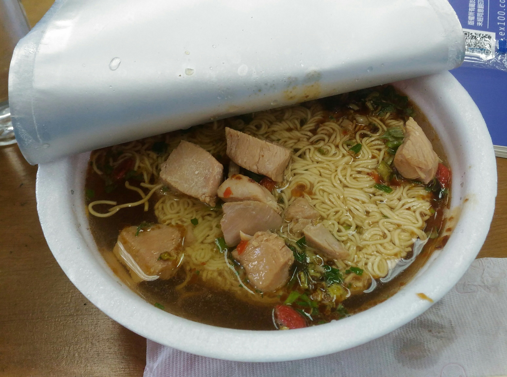
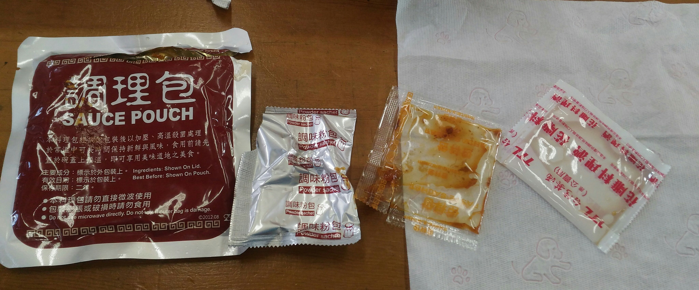
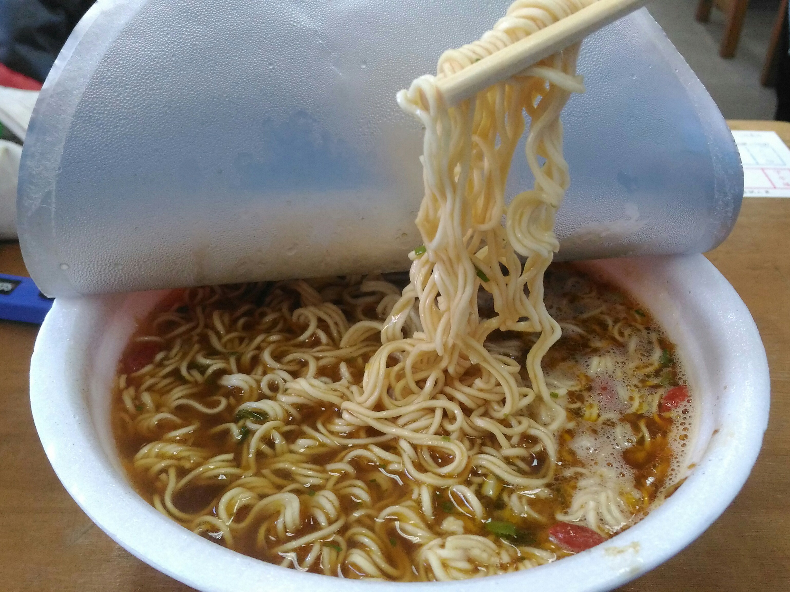

台酒 花雕雞麵

辣度NO
鹹度**
NT$46
購入地: 7-11
內含物: 麵體 一包調理包(內含雞肉及醬料)
一包調味粉包 一包調味醬包
一包料理酒包 →→→ 很香~~ ; （ ´☣///_ゝ///☣｀）;
*封面照為網路截取
製作過程:

步驟一: 將包裝打開，加入全部(4包)調味料
步驟二: 加入熱水到內水線
步驟三: 泡大約3分鐘即可享用
A:喜歡吃有濃濃中藥味&花雕酒的泡麵的話，這是一個非常好的選擇。而
且這家泡麵是真-----的----- 吃的到肉的喔喔喔喔喔~~~~~~
B:花雕酒的濃厚香味,包裹著麵條,不僅是味覺上的滿足,還是嗅覺的饗宴~~~
(σ･ω･)σ